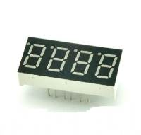

2015-06-16 - Nº 7
Editorial
Nesta 7ª Newsletter continuamos a criar conteúdo para alimentar as mentes dos makers. Disponibilizamos todos os sketchs em ZIP para facilitar a sua utilização.
Esta Newsletter encontra-se mais uma vez disponível no sistema documenta do altLab. Todas as Newsletters encontram-se indexadas no link.
Esta Newsletter tem os seguintes tópicos:
- Novidades da Semana
- Ciência e Tecnologia
- Cursos MOOC
- Modelos 3D
- Open Source
- Circuitos
- Assunto Geek
- Artigo do Maker
- Compras
Nesta Newsletter apresentamos uma rubrica nova - Assunto Geek - esta irá abordar um tópico que é considerado geek - nesta semana falamos de optimizações código em AVR. São apresentados diversos circuitos para controlar LED de 7 Segmentos e LED de 8x8. A ferramenta Open Source da semana é o 7-Zip que é uma ferramenta para criar e ler ficheiros comprimidos em ZIP e 7Z entre outros. O projeto de maker é um cartão de visita com mensagens em LEDs.
 João Alves ([email protected])
João Alves ([email protected])
O conteúdo da Newsletter encontra-se sob a licença  Creative Commons Attribution-NonCommercial-ShareAlike 4.0 International License.
Creative Commons Attribution-NonCommercial-ShareAlike 4.0 International License.
Novidades da Semana ^
Does Hardware Even Matter Anymore?
"We are in the midst of a technological revolution that is every bit as profound as the impact of cheap computing power, but it’s subtler and harder to notice. It will ease the way for companies launching and updating digital products, but it presents steep new learning curves that companies will have to master if they are to be successful. What I’m referring to is the migration of functionality from hardware to software. In more and more businesses, physical objects are no longer the primary basis for innovation and differentiation. They come second to innovations in computer code."
Rosetta’s lander Philae wakes up from hibernation
"Rosetta's lander Philae is out of hibernation! The signals were received at ESA's European Space Operations Centre in Darmstadt at 22:28 CEST on 13 June. More than 300 data packets have been analysed by the teams at the Lander Control Center at the German Aerospace Center (DLR)."
Ciência e Tecnologia ^
Implantable brain electronics is here
"In a world first, U.S. and Chinese scientists have developed a method to inject microelectronic devices such as wires and transistors directly into the brain (or other body parts) to measure or stimulate neural activity. The new method could lead to sophisticated new ways to treat conditions ranging from neurodegenerative disorders to paralysis. Developed by researchers in Charles Lieber’s lab at Harvard University and the National Center for Nanoscience and Technology in Beijing, the invention is based on a simple but radical concept: injecting a biocompatible polymer scaffold mesh with attached microelectronic devices into the brain via syringe."
"Energy-Generating Rubber" Combines Flexibility and High-Output
"Ricoh today announced that it has created a novel flexible material "Energy-Generating Rubber" that converts pressure and vibration into electric energy with high efficiency. Currently, piezoelectric materials, which generate electricity with mechanical strain, are drawing attention as energy-harvesting* materials. Major piezoelectric materials are ceramics and polymers, but they have some deficits which prevent them from wide prevalence. Piezoelectric ceramics are used for restricted purposes because of their fragility and heavy weight although they generate relatively high electricity. On the other hand, piezoelectric polymers generate very slight electricity although they achieve flexibility by reducing the thickness. The "Energy-Generating Rubber" created by Ricoh generates as high a level of electricity as ceramics while its appearance is a soft and flexible sheet. Since it overcomes the deficits of previous piezoelectric ceramics and polymers, it is expected to be applied to multiple areas combining the advantages of flexibility and high-output."
Structural color printing based on plasmonic metasurfaces of perfect light absorption
"Subwavelength structural color filtering and printing technologies employing plasmonic nanostructures have recently been recognized as an important and beneficial complement to the traditional colorant-based pigmentation. However, the color saturation, brightness and incident angle tolerance of structural color printing need to be improved to meet the application requirement. Here we demonstrate a structural color printing method based on plasmonic metasurfaces of perfect light absorption to improve color performances such as saturation and brightness. Thin-layer perfect absorbers with periodic hole arrays are designed at visible frequencies and the absorption peaks are tuned by simply adjusting the hole size and periodicity. Near perfect light absorption with high quality factors are obtained to realize high-resolution, angle-insensitive plasmonic color printing with high color saturation and brightness. Moreover, the fabricated metasurfaces can be protected with a protective coating for ambient use without degrading performances. The demonstrated structural color printing platform offers great potential for applications ranging from security marking to information storage."
Binghamton engineer creates origami battery

"Origami, the Japanese art of paper folding, can be used to create beautiful birds, frogs and other small sculptures. Now a Binghamton University engineer says the technique can be applied to building batteries, too. Seokheun "Sean" Choi developed an inexpensive, bacteria-powered battery made from paper, he writes in the July edition of the journal Nano Energy."
Cursos MOOC ^
- Introduction to Computer Programming, Part 1 - Começa a 16 de Junho.
- Programming Mobile Applications for Android Handheld Systems: Part 2 - Começa a 17 de Junho.
- An Introduction to Interactive Programming in Python (Part 2) - Começa a 11 de Julho.
- Creative Coding - Começa a 3 de Agosto.
Modelos 3D ^
Com a disponibilidade de ferramentas que permitem dar azo a nossa imaginação na criação de peças 3D e espaços como o thingiverse para as publicar, esta rubrica apresenta alguns modelos selecionados que poderão ser úteis.
Duplicating House Keys (http://www.thingiverse.com/thing:8925)
Full writeup on my blog at: http://eclecti.cc/hardware/physical-keygen-duplicating-house-keys-on-a-3d-printer
It occurred to me recently that I had printed almost nothing actually useful on my RepRap 3D printer, aside from parts to improve on or build more RepRaps. I am rectifying that with this project. The goal here is to generate working house keys by inputing the key code of the lock into a parametric OpenSCAD model. Instead of having to explain to my landlord how I ended up with a wedge of plastic jammed in my front door, I ordered a box of (well) used locks and latches from eBay to experiment on. Luckily, the lot includes both Kwikset KW1 and Schlage SC1 locks, which are the two most commonly found in the US. I created an SC1 model to start with, but I’ll probably make a KW1 soon.
EDIT: I uploaded a KW1 model as well.
Designing the key model was actually pretty straightforward. I measured a key with a ruler and calipers and created an approximate model of it that is reasonably easy to print. I then got pin depth specifications and parametrically differenced them out of the model. To generate new keys, you can just edit the last line of the file and enter in the key code for your key. If the code isn’t written on the key, you can measure the height of each bit and compare to the numbers in the Root Depth column on the aforementioned pin depth site. Perhaps more nefariously, you could implement something like SNEAKEY to generate key codes without physically measuring the key.
LED Light Diffuser (for 3mm and 5mm LEDs) (http://www.thingiverse.com/thing:866530)
I made these simple LED light diffusers for 3mm and 5mm LEDs.
No glue is needed, just push the diffusers onto the LEDs, and they should fit snugly enough not to fall off.
I suggest printing in transparent PLA/ABS, but I guess nice effects can be achieved with other colors as well, even if not transparent. For my project, I needed them to be transparent.
The last photo shows the project I made them for, a 4x4x4 touch screen controlled LED cube.
Open Source ^
7-zip
O 7-Zip é uma ferramenta usada para criar arquivos comprimidos e para descomprimi-los. Foi criada por Igor Pavlov em 1999 e tem vindo a ser desenvolvida desde então. É sem dúvida uma das melhores ferramentas deste tipo. O 7zip é distribuído com uma licença LGPL e é livre para ser usado por qualquer um. O software pode ser descarregado deste link. Encontra-se actualmente na versão 15.05 beta.
As principais funcionalidades são:
- Formato 7z com um nível muito alto de compressão - usa os algoritmos LZMA e LZMA2
- Suporte de múltiplos formatos:
- Compressão/Descompressão: 7z, XZ, BZIP2, GZIP, TAR, ZIP e WIM
- Só descompressão: ARJ, CAB, CHM, CPIO, CramFS, DEB, DMG, FAT, HFS, ISO, LZH, LZMA, MBR, MSI, NSIS, NTFS, RAR, RPM, SquashFS, UDF, VHD, WIM, XAR e Z.
- Para o ZIP/GZIP o 7-Zip consegue taxas de compressão 2 a 10% melhores que o PkZIP/Winzip
- Encriptação forte AES-256 para o 7z e ZIP/GZIP
- Capacidade de criar ficheiros Auto-descomprimíveis
- Integração com a Shell do Windows
- Gestor de ficheiros poderoso
- Versão de linha de comandos
- Localização para 87 línguas
O 7-Zip corre em todas as versões de Windows. Existe uma versão de linha de comando para Linux - o p7zip.
Links úteis:
Circuitos ^
Aqui é apresentado um circuito simples que poderá ser construído com componentes.
Controlo de LEDs de 7 Segmentos e de Matriz de 8x8
O envio de informação do micro-controlador para o utilizar é de extrema importância para ajudar na interação entre ambos.
A utilização de LEDs de 7 Segmentos é uma prática comum, uma vez que são dispositivos simples de usar e que permitem o envio de informação numérica. Neste artigo iremos ver o controlo de um conjunto de LED de 7 Segmentos controlados pelo 74HC595 e pelo CD4511.
Os LED de 7 Segmentos têm diversas variantes e tipicamente têm 1, 2, 3 ou 4 dígitos. Podem ser de cátodo comum ou de anodo comum. O cátodo (-) indica a polaridade negativa e o ânodo (+) a positiva de uma fonte de energia.
Iremos também ver a utilização de outro integrado - o MAX7219 - que é mais potente e permite controlar até 8 LEDs de 7 Segmentos ou uma matriz de LEDs de 8x8.
Uma matriz de LED de 8x8 pode ser Cátodo Linha/Ânodo Coluna ou Ânodo Linha/Cátodo Coluna. Em função da tipologia da mesma logo as conexões têm que ser invertidas.
Para o 74HC595 é usada uma interface Série para Paralela que já foi abordada no artigo da Newsletter Nº6.
Para o CD4511 é convertido o número passado em binário em quatro pinos para o LED de 7 Segmentos.
No caso do MAX7219 é usado um interface SPI para o envio da informação para o integrado.
Esquemático
Com o 74HC595:
Com o CD4511:
Com o MAX7219:
Para a matriz de 8x8 LEDs:
A numeração usada nos LEDs de Segmentos e nas matrizes de cubos é idêntica aos Chips DIP.
As ligações entre o LED 4x 7-Segmentos foi a seguinte:
| Display 4 x 7-Segmentos | MAX 7219 | 7-Segment Code | Segmento |
|---|---|---|---|
| 1 | 21 | E | Ambos |
| 2 | 23 | D | Ambos |
| 3 | 22 | DP | Ambos |
| 4 | 20 | C | Ambos |
| 5 | 17 | G | Ambos |
| 6 | 7 | D4 | Esquerda |
| 7 | 16 | B | Ambos |
| 8 | 6 | D3 | Esquerda |
| 9 | 11 | D2 | Esquerda |
| 10 | 15 | F | Ambos |
| 11 | 14 | A | Ambos |
| 12 | 2 | D1 | Esquerda |
| 6 | 8 | D4 | Direita |
| 8 | 5 | D3 | Direita |
| 9 | 10 | D2 | Direita |
| 12 | 3 | D1 | Direita |
As Ligações entre o MAX7219 e a Matriz de 8x8:
| Matriz 8x8 | MAX7219 |
|---|---|
| 9 | 22 |
| 14 | 14 |
| 8 | 16 |
| 12 | 20 |
| 1 | 23 |
| 7 | 21 |
| 2 | 15 |
| 5 | 17 |
| 13 | 2 |
| 3 | 11 |
| 4 | 6 |
| 10 | 7 |
| 6 | 3 |
| 11 | 10 |
| 15 | 5 |
| 16 | 8 |
Nota: O circuito para o CSEduino pode ser consultado no Artigo do Maker da Newsletter Nº5. Pode igualmente ser usado um Arduino.
Componentes (BOM):
Para o Circuito com o 74HC595:
- CSEduino
- 74HC595
- 8 Resistências de 470 Ohm
- 1 LED 7 Segmentos anodo comum
- 1 LED 7 Segmentos Cátodo comum
Para o Circuito com o CD4511:
- CSEduino
- CD4511
- 8 Resistências de 470 Ohm
- 1 LED 7 Segmentos Ânodo comum
- 1 LED 7 Segmentos Cátodo comum
Para o Circuito com o MAX7219:
- CSEduino
- MAX7219
- 1 Condensador Electrolítico de 100uF
- 1 Condensador Cerâmico de 100nF
- 1 Resistência de 10K Ohm
- LED 8x8 Cátodo Linha/Ânodo Coluna (788BS)
Pin-out dos IC
Código
O Sketch usado para o 74HC595 foi o seguinte:
// Filename: control7Seg-74hc595.ino
#define LATCH 12
#define CLOCK 11
#define DATA 10
#define INTENSITY 9
const int patternDelay = 500;
// adder = 0 - Common Cathode
// adder = 255 - Common Anode
//const byte adder = 0;
const byte adder = 255;
const byte test_pattern[] = { 0,1,2,4,8,16,32,64,128 };
void testLeds() {
for (int numberToDisplay = 0; numberToDisplay < sizeof(test_pattern); numberToDisplay++) {
digitalWrite(LATCH, LOW);
shiftOut(DATA, CLOCK, MSBFIRST, adder ? adder-test_pattern[numberToDisplay] : test_pattern[numberToDisplay] );
digitalWrite(LATCH, HIGH);
delay(100);
}
}
void setup() {
//set pins to output so you can control the shift register
pinMode(LATCH, OUTPUT);
pinMode(CLOCK, OUTPUT);
pinMode(DATA, OUTPUT);
pinMode(INTENSITY, OUTPUT);
digitalWrite(INTENSITY, LOW); // Funciona ao contrário
testLeds();
}
#define _TL 64
#define _TR 16
#define _BL 1
#define _BR 4
#define _BT 2
#define _TP 32
#define _MD 128
#define _DE 8
const byte pattern[] PROGMEM = {
0,
_TP + _TR + _BR + _BT + _BL + _TL,
_TR + _BR,
_TP + _TR + _BT + _BL + _MD,
_TP + _TR + _BR + _BT + _MD,
_TR + _BR + _TL + _MD,
_TP + _BR + _BT + _TL + _MD,
_TP + _BR + _BT + _BL + _TL + _MD,
_TP + _TR + _BR,
_TP + _TR + _BR + _BT + _BL + _TL + _MD,
_TP + _TR + _BR + _BT + _TL + _MD
};
void loop()
{
for (int numberToDisplay = 0; numberToDisplay < sizeof(pattern); numberToDisplay++) {
digitalWrite(LATCH, LOW);
shiftOut(DATA, CLOCK, MSBFIRST, adder ? adder-pattern[numberToDisplay] : pattern[numberToDisplay] );
digitalWrite(LATCH, HIGH);
delay(patternDelay);
}
}
Este sketch funciona tanto para Segmento de 7 LEDs com Cátodo comum como com Ânodo comum. Para isso deverá ser alterada a variavel adder da seguinte forma:
- Cátodo Comum: const byte adder = 0
- Ânodo comum: const byte adder = 255
O Sketch usado para o CD4511 foi o seguinte:
// Filename: control7Seg-cd4511.ino
// Pinos: A0, A1, A2, A3 do CD4511
const byte pins[] = { 2,3,4,5 };
void setup() {
for (int i=0; i<sizeof(pins);i++) {
pinMode(pins[i],OUTPUT);
}
}
void loop() {
for (int n=0; n<10; n++) {
for(int i=0; i<sizeof(pins);i++) {
digitalWrite(pins[i],n & (1 << i) ? HIGH : LOW);
}
delay(250);
}
}
O Sketch usado para o MAX7219 foi o seguinte:
// Filename: control7Seg-max7219.ino
#include "LedControl.h"
LedControl lc = LedControl(11,13,10,1);
unsigned long delaytime = 250;
void setup() {
lc.shutdown(0,false);
lc.setIntensity(0,8);
lc.clearDisplay(0);
}
void writeChar(byte px, byte py, byte ch) {
if (ch >= 32) {
lc.setChar(px,py,ch,false);
} else {
lc.setRow(px,py,ch);
}
}
void writeArduinoOn7Segment() {
byte cseduino[] = {'c','5','e','d',0x1c,B00010000,0x15,0x1D,'-','H','e','l','p','-','-','-'};
for(int i = 0; i<sizeof(cseduino) - 7; i++) {
writeChar(0, 7, cseduino[i+7]);
writeChar(0, 6, cseduino[i+6]);
writeChar(0, 5, cseduino[i+5]);
writeChar(0, 4, cseduino[i+4]);
writeChar(0, 3, cseduino[i+3]);
writeChar(0, 2, cseduino[i+2]);
writeChar(0, 1, cseduino[i+1]);
writeChar(0, 0, cseduino[i]);
delay(delaytime*1000);
}
}
void scrollDigits() {
for(int i=0;i<16-7;i++) {
lc.setDigit(0, 0, i, false);
lc.setDigit(0, 1, i+1, false);
lc.setDigit(0, 2, i+2, false);
lc.setDigit(0, 3, i+3, false);
lc.setDigit(0, 4, i+4, false);
lc.setDigit(0, 5, i+5, false);
lc.setDigit(0, 6, i+6, false);
lc.setDigit(0, 7, i+7, false);
delay(delaytime);
}
lc.clearDisplay(0);
delay(delaytime);
}
void loop() {
writeArduinoOn7Segment();
scrollDigits();
}
Para este sketch funcionar é necessário importar a biblioteca Ledcontrol neste link.
O sketch para controlar os LEDs 8x8:
// Filename: control8x8-max7219.ino
//We always have to include the library
#include "LedControl.h"
/*
Now we need a LedControl to work with.
***** These pin numbers will probably not work with your hardware *****
pin 12 is connected to the DataIn
pin 11 is connected to the CLK
pin 10 is connected to LOAD
We have only a single MAX72XX.
*/
LedControl lc=LedControl(11, 13, 10, 1);
/* we always wait a bit between updates of the display */
unsigned long delaytime=100;
void setup() {
/*
The MAX72XX is in power-saving mode on startup,
we have to do a wakeup call
*/
lc.shutdown(0,false);
/* Set the brightness to a medium values */
lc.setIntensity(0,8);
/* and clear the display */
lc.clearDisplay(0);
}
/*
This method will display the characters for the
word "Arduino" one after the other on the matrix.
(you need at least 5x7 leds to see the whole chars)
*/
void writeArduinoOnMatrix() {
/* here is the data for the characters */
byte a[5]={B01111110,B10001000,B10001000,B10001000,B01111110};
byte r[5]={B00111110,B00010000,B00100000,B00100000,B00010000};
byte d[5]={B00011100,B00100010,B00100010,B00010010,B11111110};
byte u[5]={B00111100,B00000010,B00000010,B00000100,B00111110};
byte i[5]={B00000000,B00100010,B10111110,B00000010,B00000000};
byte n[5]={B00111110,B00010000,B00100000,B00100000,B00011110};
byte o[5]={B00011100,B00100010,B00100010,B00100010,B00011100};
/* now display them one by one with a small delay */
lc.setRow(0,0,a[0]);
lc.setRow(0,1,a[1]);
lc.setRow(0,2,a[2]);
lc.setRow(0,3,a[3]);
lc.setRow(0,4,a[4]);
delay(delaytime);
lc.setRow(0,0,r[0]);
lc.setRow(0,1,r[1]);
lc.setRow(0,2,r[2]);
lc.setRow(0,3,r[3]);
lc.setRow(0,4,r[4]);
delay(delaytime);
lc.setRow(0,0,d[0]);
lc.setRow(0,1,d[1]);
lc.setRow(0,2,d[2]);
lc.setRow(0,3,d[3]);
lc.setRow(0,4,d[4]);
delay(delaytime);
lc.setRow(0,0,u[0]);
lc.setRow(0,1,u[1]);
lc.setRow(0,2,u[2]);
lc.setRow(0,3,u[3]);
lc.setRow(0,4,u[4]);
delay(delaytime);
lc.setRow(0,0,i[0]);
lc.setRow(0,1,i[1]);
lc.setRow(0,2,i[2]);
lc.setRow(0,3,i[3]);
lc.setRow(0,4,i[4]);
delay(delaytime);
lc.setRow(0,0,n[0]);
lc.setRow(0,1,n[1]);
lc.setRow(0,2,n[2]);
lc.setRow(0,3,n[3]);
lc.setRow(0,4,n[4]);
delay(delaytime);
lc.setRow(0,0,o[0]);
lc.setRow(0,1,o[1]);
lc.setRow(0,2,o[2]);
lc.setRow(0,3,o[3]);
lc.setRow(0,4,o[4]);
delay(delaytime);
lc.setRow(0,0,0);
lc.setRow(0,1,0);
lc.setRow(0,2,0);
lc.setRow(0,3,0);
lc.setRow(0,4,0);
delay(delaytime);
}
/*
This function lights up a some Leds in a row.
The pattern will be repeated on every row.
The pattern will blink along with the row-number.
row number 4 (index==3) will blink 4 times etc.
*/
void rows() {
for(int row=0;row<8;row++) {
delay(delaytime);
lc.setRow(0,row,B10100000);
delay(delaytime);
lc.setRow(0,row,(byte)0);
for(int i=0;i<row;i++) {
delay(delaytime);
lc.setRow(0,row,B10100000);
delay(delaytime);
lc.setRow(0,row,(byte)0);
}
}
}
/*
This function lights up a some Leds in a column.
The pattern will be repeated on every column.
The pattern will blink along with the column-number.
column number 4 (index==3) will blink 4 times etc.
*/
void columns() {
for(int col=0;col<8;col++) {
delay(delaytime);
lc.setColumn(0,col,B10100000);
delay(delaytime);
lc.setColumn(0,col,(byte)0);
for(int i=0;i<col;i++) {
delay(delaytime);
lc.setColumn(0,col,B10100000);
delay(delaytime);
lc.setColumn(0,col,(byte)0);
}
}
}
/*
This function will light up every Led on the matrix.
The led will blink along with the row-number.
row number 4 (index==3) will blink 4 times etc.
*/
void single() {
for(int row=0;row<8;row++) {
for(int col=0;col<8;col++) {
delay(delaytime);
lc.setLed(0,row,col,true);
delay(delaytime);
for(int i=0;i<col;i++) {
lc.setLed(0,row,col,false);
delay(delaytime);
lc.setLed(0,row,col,true);
delay(delaytime);
}
}
}
}
void loop() {
writeArduinoOnMatrix();
rows();
columns();
single();
}
Todos os sketchs encontram-se num ZIP neste link
Links úteis:
- 7-segment Display
- The MAX7219 and MAX7221 Led drivers
- Interfacing LED displays with the MAX7219 driver
- Driving 8×8 LED Matrix (LD-1088BS)
Assunto Geek ^
Um assunto que interessa aos Geeks e não só
Optimizações de AVR
No mundo dos micro-controladores e ao contrário do mundo dos computadores, os recursos são escassos e todas as optimizações que possam ser feitas são muito úteis. Neste artigo iremos abordar algumas das várias optimizações que podem ser feitas para que o código final carregado no micro-controlador seja mais pequeno e potencialmente mais rápido. Irei focar-me na optimização que pode ser obtida nos chips da família Atmega/Attiny. No entanto algumas destas abordagens podem ser seguidas para qualquer tipo de micro-controlador.
Partirei de um exemplo simples e iremos observar que com algumas alterações a redução de código produzido pelo compilador é muito significativa.
Existem 18 recomendações que globalmente diminuem o tamanho do código:
- Compilar com optimização por tamanho (-Os). O Arduino IDE já tem esta flag ativa por omissão.
- Usar variáveis locais sempre que possível.
- Usar o tipo de dados mais pequeno aplicável. Usar variáveis sem sinal se possível.
- Se uma variável não local apenas é referenciada dentro de função deverá ser declarada estática.
- Juntar variáveis não locais em estruturas sempre que seja natural. Isto aumenta a possibilidade de endereçamento indirecto sem recarregamento do apontador.
- Usar apontadores com deslocamento (offset) ou declarar estruturas para aceder ao I/O memory mapped.
- Usar o Use for(;;) { } para ciclos externos.
- Usar o do { } while(expressão) se aplicável.
- Usar contadores descendentes e pre-decrementos se aplicável.
- Aceder à memory de I/O directamente (i.e., não usar apontadores).
- Declarar a main como C_task se não for chamada de nenhum lado do programa.
- Usar macros em vez de funções para tarefas que criem menos de 2-3 linhas de código assembler.
- Reduzir o tamanho do Interrupt Vector segment (INTVEC) para o que é atualmente usado pela aplicação. Alternativamente, concatenar todos os CODE segments numa declaração e será feito automaticamente.
- A reutilização de código é intra-modular. Conjugue varias funções num módulo (i.e., num ficheiro) para aumentar o factor de reutilização de código.
- Em alguns casos, as optimizações por velocidade resultam em código de tamanho menor que a optimização por tamanho. Compilar módulo a módulo para verificar qual apresenta melhor resultado.
- Optimizar o C_startup para não inicializar segmentos não usados (i.e., IDATA0 ou IDATA1 se todas as variáveis são pequenas).
- Se possível, evite chamar funções de dentro da rotina de interrupção.
- Usar o modelo de memória menor possível.
Iremos fazer uso de algumas destas recomendações. Para se testar o resultado das optimizações iremos partir de um código base.
Todos os sketchs encontram-se num ZIP neste link
O seguinte código é uma versão modificada do Blink que vai piscar dois leds com um intervalo variável entre 0 e 1000 mseg com saltos de 100 em 100 mseg.
int led1 = 13;
int led2 = 12;
int delayTime = 1000;
void setup() {
pinMode(led1, OUTPUT);
pinMode(led2, OUTPUT);
}
void loop() {
for (delayTime = 0; delayTime < 1000 ; delayTime += 100) {
digitalWrite(led1, HIGH);
delay(delayTime);
digitalWrite(led1, LOW);
delay(delayTime);
digitalWrite(led2, HIGH);
delay(delayTime);
digitalWrite(led2, LOW);
delay(delayTime);
}
}
// Sketch uses 1,198 bytes (3%) of program storage space. Maximum is 32,256 bytes.
// Global variables use 15 bytes (0%) of dynamic memory, leaving 2,033 bytes for local variables. Maximum is 2,048 bytes.
Como podemos observar o código original ocupa 1196 bytes de flash.
Usando a optimização do espaço ocupado pelas variáveis iremos alterar o seu tipo:
| Tipo | Intervalo de valores | Nº de Bytes |
|---|---|---|
| char | -128 a 127 | 1 |
| byte | 0 a 255 | 1 |
| int | -32,768 a 32,767 | 2* |
| unsigned int | 0 a 65,535 | 2* |
| word | 0 a 65,535 | 2 |
| long | -2,147,483,648 a 2,147,483,647 | 4 |
| unsigned long | 0 a 4,294,967,295 | 4 |
| float | -3.4028235E+38 a 3.4028235E+38 | 4 |
| double | -3.4028235E+38 a 3.4028235E+38 | 4* |
Os valores com (*) são para o chip Atmega328P. Noutros poderá ser diferente.
Passo 1
No exemplo podemos verificar que a declaração dos leds pode ser convertida em byte.
Adicionalmente pode igualmente ser convertida em const uma vez que não são alteradas (esta informação é essencial para o compilador optimizar a utilização destas variáveis).
Este passo é totalmente seguro e pode sempre ser feito.
const byte led1 = 13;
const byte led2 = 12;
int delayTime = 1000;
void setup() {
pinMode(led1, OUTPUT);
pinMode(led2, OUTPUT);
}
void loop() {
for (delayTime = 0; delayTime < 1000; delayTime += 100) {
digitalWrite(led1, HIGH);
delay(delayTime);
digitalWrite(led1, LOW);
delay(delayTime);
digitalWrite(led2, HIGH);
delay(delayTime);
digitalWrite(led2, LOW);
delay(delayTime);
}
}
// Sketch uses 1,182 bytes (3%) of program storage space. Maximum is 32,256 bytes.
// Global variables use 11 bytes (0%) of dynamic memory, leaving 2,037 bytes for local variables. Maximum is 2,048 bytes.
O ganho foi de 16 bytes.
Passo 2
Vamos agora passar a variável global delayTime para local da função loop.
Este passo é totalmente seguro e pode sempre ser feito.
const byte led1 = 13;
const byte led2 = 12;
void setup() {
pinMode(led1, OUTPUT);
pinMode(led2, OUTPUT);
}
void loop() {
int delayTime;
for (delayTime = 0; delayTime <= 1000; delayTime += 100) {
digitalWrite(led1, HIGH);
delay(delayTime);
digitalWrite(led1, LOW);
delay(delayTime);
digitalWrite(led2, HIGH);
delay(delayTime);
digitalWrite(led2, LOW);
delay(delayTime);
}
}
// Sketch uses 1,110 bytes (3%) of program storage space. Maximum is 32,256 bytes.
// Global variables use 11 bytes (0%) of dynamic memory, leaving 2,037 bytes for local variables. Maximum is 2,048 bytes.
Desta vez o ganho foi de 72 bytes.
Passo 3
Neste passo iremos encapsular funções que fazem múltiplas operações. Neste caso criou-se uma função para executar o trabalho de um dos leds.
Este passo é totalmente seguro e pode sempre ser feito.
const byte led1 = 13;
const byte led2 = 12;
void setup() {
pinMode(led1, OUTPUT);
pinMode(led2, OUTPUT);
}
void go(const byte led, const int delayTime) {
digitalWrite(led, HIGH);
delay(delayTime);
digitalWrite(led, LOW);
delay(delayTime);
}
void loop() {
int delayTime;
for (delayTime = 0; delayTime <= 1000; delayTime += 100) {
go(led1, delayTime);
go(led2, delayTime);
}
}
// Sketch uses 1,102 bytes (3%) of program storage space. Maximum is 32,256 bytes.
// Global variables use 9 bytes (0%) of dynamic memory, leaving 2,039 bytes for local variables. Maximum is 2,048 bytes.
Apenas ganhámos 8 bytes.
Passo 4
Temos que tomar medidas mais radicais. Isto passa por substituir as funções pinMode e digitalWrite.
Esta alteração quebra algumas funcionalidades nomeadamente a relacionada com o PWM.
Também não é feita verificação de valores incorrectos passados às macros. Uma vez que vamos mexer directamente com os registos o código tem um conjunto de macros que permitem o uso do código com os seguintes microcontroladores:
- Atmega328P
- Atmega168
- attiny45/85
- attiny44/84
Este código é tendencialmente mais rápido porque faz o estritamente necessário.
Incluir o código no topo dos sketchs:
// AVR-optimize
//
#if defined (__AVR_ATtiny45__) || defined (__AVR_ATtiny85__) || defined (__AVR_ATtiny44__) || defined (__AVR_ATtiny84__)
#define portOfPin(P)\
((&PORTB))
#define ddrOfPin(P)\
((&DDRB))
#define pinOfPin(P)\
((&PINB))
#define pinIndex(P)((uint8_t)(P>13?P-14:P&7))
#else
#if (__AVR_ATtiny44__) || defined (__AVR_ATtiny84__)
#define portOfPin(P)\
(((P)>=0&&(P)<8)?&PORTA:&PORTB)
#define ddrOfPin(P)\
(((P)>=0&&(P)<8)?&DDRA:&DDRB)
#define pinOfPin(P)\
(((P)>=0&&(P)<8)?&PINA:&PINB)
#define pinIndex(P)((uint8_t)(P>7?P-7:P&7))
#else
#if defined(__AVR_ATmega328P__) || defined(__AVR_ATmega168__)
#define portOfPin(P)\
(((P)>=0&&(P)<8)?&PORTD:(((P)>7&&(P)<14)?&PORTB:&PORTC))
#define ddrOfPin(P)\
(((P)>=0&&(P)<8)?&DDRD:(((P)>7&&(P)<14)?&DDRB:&DDRC))
#define pinOfPin(P)\
(((P)>=0&&(P)<8)?&PIND:(((P)>7&&(P)<14)?&PINB:&PINC))
#define pinIndex(P)((uint8_t)(P>13?P-14:P&7))
#endif
#endif
#endif
#define pinIndex(P)((uint8_t)(P>13?P-14:P&7))
#define pinMask(P)((uint8_t)(1<<pinIndex(P)))
#define pinAsInput(P) *(ddrOfPin(P))&=~pinMask(P)
#define pinAsInputPullUp(P) *(ddrOfPin(P))&=~pinMask(P);digitalHigh(P)
#define pinAsOutput(P) *(ddrOfPin(P))|=pinMask(P)
#define digitalLow(P) *(portOfPin(P))&=~pinMask(P)
#define digitalHigh(P) *(portOfPin(P))|=pinMask(P)
#define isHigh(P)((*(pinOfPin(P))& pinMask(P))>0)
#define isLow(P)((*(pinOfPin(P))& pinMask(P))==0)
#define digitalState(P)((uint8_t)isHigh(P))
Novo código:
// incluir o AVR-optimize
const byte led1 = 3;
const byte led2 = 2;
void setup() {
pinAsOutput(led1);
pinAsOutput(led2);
}
void go(const byte led, const int delayTime) {
digitalHigh(led);
delay(delayTime);
digitalLow(led);
delay(delayTime);
}
void loop() {
int delayTime;
for (delayTime = 0; delayTime <= 1000; delayTime += 100) {
go(led1, delayTime);
go(led2, delayTime);
}
}
// Sketch uses 812 bytes (2%) of program storage space. Maximum is 32,256 bytes.
// Global variables use 9 bytes (0%) of dynamic memory, leaving 2,039 bytes for local variables. Maximum is 2,048 bytes.
Finalmente quebrámos a barreira do 1k.
Um sketch sem qualquer código ocupa 450 bytes. O nosso ocupa 812 bytes.
O que significa que o código que estamos a usar está a ocupar 362 bytes.
Passo 5
Ainda não substituímos uma das funções - delay. Neste passo fazemos essa substituição.
// incluir o AVR-optimize
const byte led1 = 13;
const byte led2 = 12;
void setup() {
pinAsOutput(led1);
pinAsOutput(led2);
}
void tinyDelay(int time) {
register unsigned long initial = millis();
while ( millis() - initial < time ) {
yield();
}
}
void go(const byte led, const int delayTime) {
digitalHigh(led);
tinyDelay(delayTime);
digitalLow(led);
tinyDelay(delayTime);
}
void loop() {
int delayTime;
for (delayTime = 0;delayTime <= 1000;delayTime += 100) {
go(led1, delayTime);
go(led2, delayTime);
}
}
// Sketch uses 744 bytes (2%) of program storage space. Maximum is 32,256 bytes.
// Global variables use 9 bytes (0%) of dynamic memory, leaving 2,039 bytes for local variables. Maximum is 2,048 bytes.
Nesta última iteração conseguimos passar para 744 bytes.
Passo Final
Iremos neste passo fazer ainda mais algumas optimizações:
- Criar o nosso próprio main
- voltar a descrever as operações que a função go fazia eliminando a função completamente
- eliminar o setup e o loop colocando o código diretamente no main
// incluir o AVR-optimize
const byte led1 = 13;
const byte led2 = 12;
void tinyDelay(int time) {
register unsigned long initial = millis();
while ( millis() - initial < time ) {
yield();
}
}
int main(void) {
init(); // don't forget this!
// SETUP:
pinAsOutput(led1);
pinAsOutput(led2);
for(;;) {
// LOOP:
int delayTime;
for (delayTime = 0; delayTime <= 1000; delayTime += 100) {
digitalHigh(led1);
tinyDelay(delayTime);
digitalLow(led1);
tinyDelay(delayTime);
digitalHigh(led2);
tinyDelay(delayTime);
digitalLow(led2);
tinyDelay(delayTime);
}
}
}
// Sketch uses 578 bytes (1%) of program storage space. Maximum is 32,256 bytes.
// Global variables use 9 bytes (0%) of dynamic memory, leaving 2,039 bytes for local variables. Maximum is 2,048 bytes.
Conclusão
Começamos com 1,198 bytes e conseguimos optimizar o código para 578 bytes - menos de metade do código original.
Este exercício deverá ser feito sempre que necessário ponderando todos os potenciais problemas que algumas das optimizações podem provocar.
Poderíamos ainda ter ido para o código plain sem bibliotecas do Arduino mas isso fica para outro artigo.
Links úteis:
- How to reduce program size
- AVR035: Efficient C Coding for AVR
- Arduino 1.0 — a few things you can do to save FLASH space
- Arduino Assembly Language Listing of Compiled Sketch (Windows)
- Fastest digitalRead / digitalWrite Alternative
Artigo do Maker ^
Projeto interessante publicado por um maker.
Dot Matrix Business Card
O projecto desta semana é um "Business Card" hi-tech. O maker deste projecto é o tom ward e o projecto encontra-se descrito aqui neste link.
O desenho é muito simples para o que faz - uma matriz de 5x15 LEDs ligados a um micro-controlador PIC. Algumas resistências e condensadores. Por manter o micro-controlador em modo Sleep a não ser que os botões sejam premidos, a bateria pode durar bastante tempo.
O esquemático do projeto pode ser descarregado neste link
O que é necessário para o projecto:
Materiais
- bateria CR2032
- receptáculo para a Bateria CR2032
- PIC16F57
- 4 botões de pressão SMD
- Algumas resistências e condensadores no formato 0805:
- 5 x Resistência de 100 Ohm
- 2 x Resistência de 10K Ohm
- 1 x Resistência de 47K Ohm
- 1 x Condensador de 47p
- 1 x Condensador de 100n
- 75 LEDS "0603" formato SMD
- Adesivo de dupla face
- PCB pdf normal pdf invertido
Para programar o micro-controlador foi usado o PICKit2.
Soldar as partes
Proceder à soldagem de todas as partes começando pelas mas pequenas. Um par de pinças é útil para fixar o componente. Tipicamente pode colocar-se um pouco de solda no "pad" da PCB e depois com o componente em cima e o ferro derreter novamente a solda para o componente ficar fixo.
Ter em atenção que os LEDs têm "polaridade" e como tal apenas funciona de uma forma. Eventualmente para garantir a posição correta deverá testar-se um deles com um multimetro.
Uma placa dupla face Ad-hoc
Colocar algumas listas de fita invisível nos traços verticais da PCB junto a cada coluna de LEDs impede os fios que iremos soldar de tocarem nestes.
A seguir colocar um fio fino de cobre por cima de cada linha de LEDs para chegar até à resistência como na fotografia. De notar que apenas são precisos 4 fios. A de topo não é necessária se for usada o desenho de PCB que foi providenciado.
Programação do PIC16F57
O próximo passo é por o programa no micro-controlador. Tudo o que precisa é um PIC KIT 2 programmer. Descarregar o Código e depois a partir do IDE do MPLAB abrir o ficheiro "main.asm". Pode alterar as mensagens guardadas (perto da linha 115 no código) para os seus dados.
A seguir selecione o "QuickBuild" e verifique que não há erros. Estamos prontos para enviar o código para o PIC. Foi usada uma técnica simples de inserir uma linha de 5 pinos no programador e depois encostar estes ao PIC para programar. Parece complicado mas como os processos de limpeza e escrita demoram cerca de 1 segundo é bastante rápido.
Atenção que a fotografia contem um erro e a seta do pino do fim do programador deve alinhar-se com o pino de topo do PIC. Para programar deverá ser usada a ferramenta PICKIT2 uma vez que o MPLAB não suporta programar diretamente o PIC16F57. Para fazer isto deverá especificar a família do PIC e o micro-controlador especifico 16F57, antes de carregar o ficheiro HEX criado nos passos anteriores e finalmente programar o chip.
Se tudo tiver corrido corretamente, ao ser inserida a bateria os botões deverão funcionar.
Finalização
Para envolver o protótipo foi usada fita de duas camadas cortando o excesso. Depois foi colocada uma película transparente por cima dos botoes e leds. A imagem carregada na película foi impressa em espelho para que a esta fique do lado de dentro do dispositivo. Pode ser descarregada neste link.
Outros artigos/projetos interessantes de ler:
Compras ^
Artigos do ebay ou de outras lojas online que poderão ser úteis em projetos.
8x8 8*8 3mm Dot Matrix Common Anode Red LED Display Module for Arduino Raspberry
(http://www.ebay.co.uk/itm/230957669020) - US $1.55
Product Name:
8x8 3mm Dot-Matrix dia. Red LED Display New
2pcs 0.36 inch 4 digit led display 7 seg segment Common cathode Red
(http://www.ebay.co.uk/itm/201199391220) - US $2.43

Product Description
2pcs 0.36 inch 4 digit led display 7 seg segment Common cathode Red GOOD QUALITY
5pcs MAX7219CNG MAX7219ENG MAX7219 DIP-24
(http://www.ebay.co.uk/itm/301390022426) - £2.95
5pcs MAX7219CNG MAX7219ENG MAX7219 DIP-24
That's all Folks!